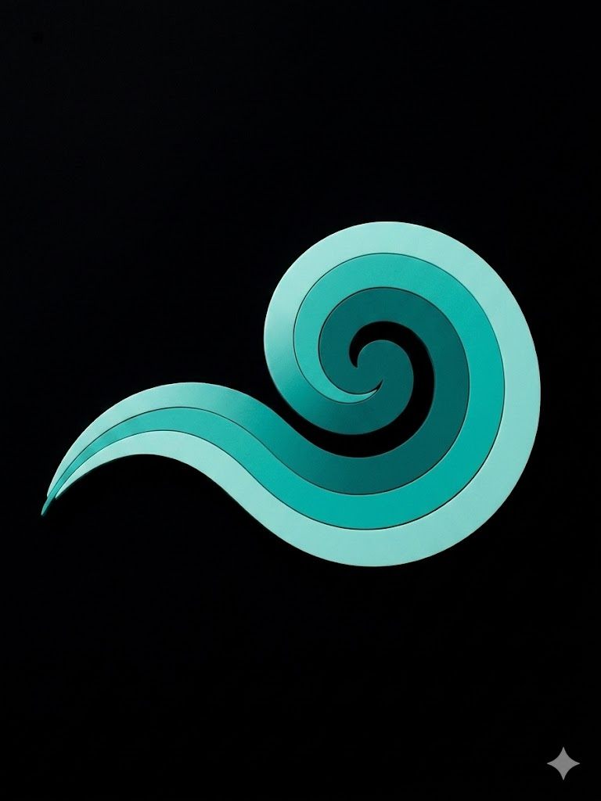

Tu guía personalizada en el Museo Nacional de Antropología.
Como propuesta de solución derivada del estudio de caso de la app del MNA, diseñé a Tlaia: un chatbot enfocado en guiar la experiencia del usuario desde su llegada al museo.
A través de una arquitectura de información simplificada y un tono cercano, este asistente resuelve dudas de accesibilidad, servicios logísticos y propone recorridos personalizados según el tiempo disponible de las personas, mitigando la sobrecarga cognitiva identificada en la investigación.
*Nota: Por el momento, la demo de este asistente interactivo se encuentra disponible únicamente en español.
Ver estudio de caso completo